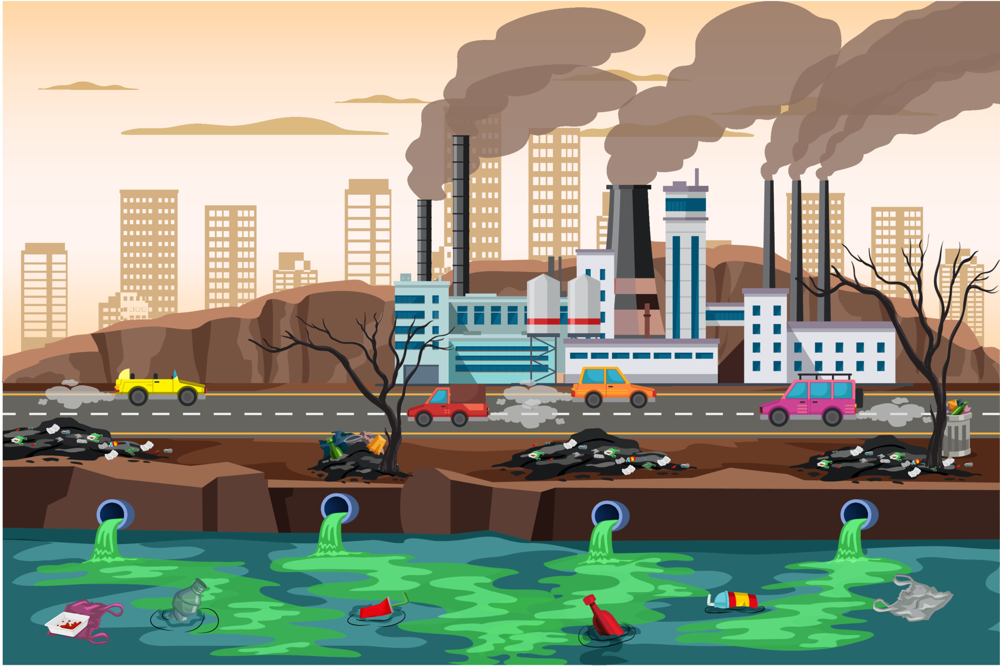
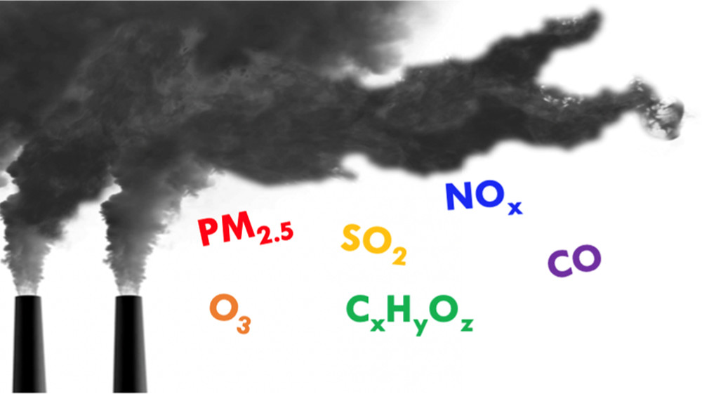
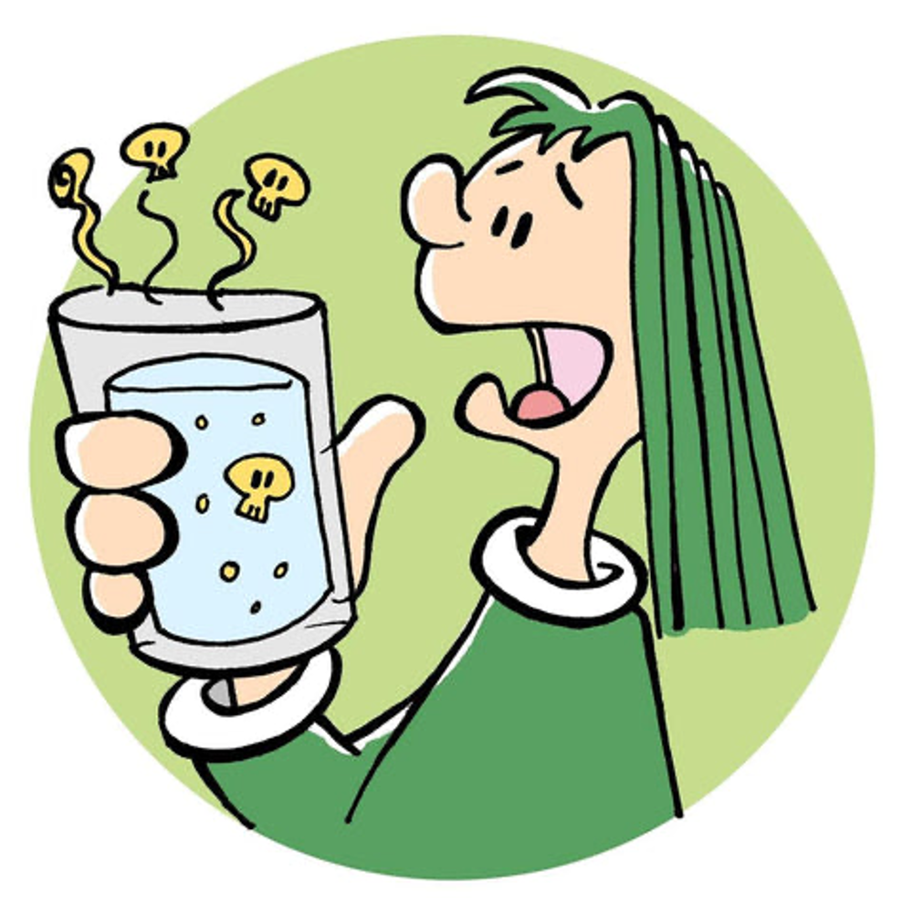
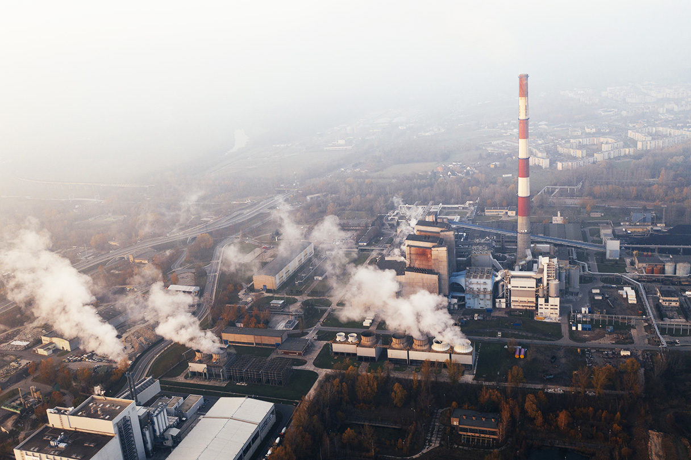
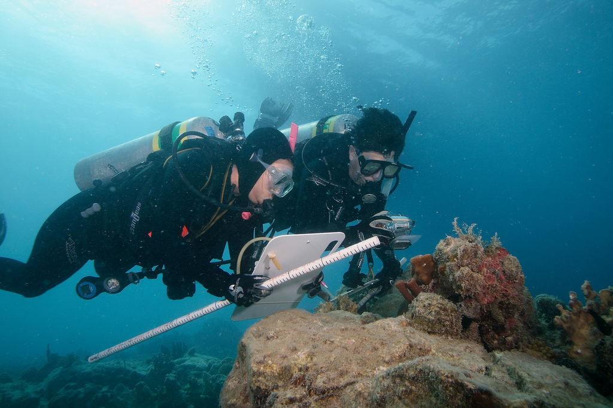
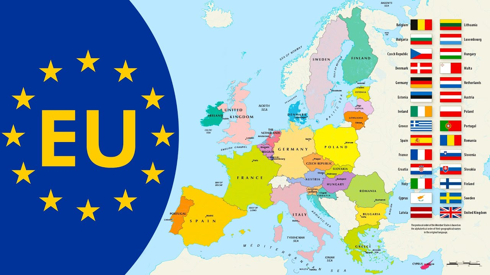

6 The Quality of the Environment
Human activity is transforming nearly all of Earth’s natural systems. With the human population now exceeding 8 billion people and rapid growth in per capita consumption of goods and services, humanity’s growing ecological footprint is altering the planet’s land cover, rivers and oceans, climate system, biogeochemical cycles, and the functioning of its ecosystems (Foley, J., et. al., 2005).
Pollution is a problem historically
Pollution problems are not new to mankind. It has always been the case that urban areas have bad pollution problems, primarily because of the large concentrations of people. People are associated with emissions as well as being the reason pollution is damaging. What is new is the magnitude of the problem and the fact that the world is no longer infinite compared to the ability of people to pollute.

Population growth and the high standard of living make the pollution problem significant
The enormous size of our current world’s population and the high standard of living of portions of the population are responsible for the pressures on the environment. A larger economy generates more pollution, all other things being equal; richer citizens usually demand higher levels of environmental quality. And as long as the world becomes more populated and wealthier, the pressures will only increase. This is not to say environmental problems cannot be solved, only that it will become increasingly difficult to protect the earth’s environment.

6.1 Main categories of environmental problems
We focus on four main categories of environmental problems: (A) air pollution, (B) water pollution, (C) toxic emissions, and (D) ecosystem health.
6.1.1 A. Air Pollution:
Air pollution is primarily a by-product of energy consumption. Impurities in fuels lead to emissions of sulfur dioxide and particulate matter. It is a basic fact of chemistry that burning carbon-based fuels leads to emissions of oxidized carbon-carbon dioxide, a major greenhouse gas. Because our atmosphere contains significant amounts of nitrogen in addition to oxygen, burning fuels inevitably leads to emissions of nitrogen oxides.
To a large extent, air pollutants are at their worst in urban areas, due to concentrations of people, both as sources of the pollution (directly or indirectly) and as victims of the pollution. Air pollution can lead to health problems, including sickness as well as physical irritation and reduced human performance.
6.1.2 B. Water Pollution:
- Water pollution has traditionally been the result of organic material deposited in waterways or lakes. One particularly difficult water pollution problem is pollution of groundwater. Groundwater, water in underground aquifers, is the source of drinking water for many people. Because of the cleansing ability of the earth above the aquifer, groundwater has traditionally been relatively contaminant free.

- Surface waters, such as lakes and rivers, are the ultimate repositories of much that is deposited on the land. Lakes and rivers throughout the developed world suffer to varying degrees from excessive levels of nutrients (from agricultural runoff) and acidification. Nutrients can promote the growth of algae and phytoplankton, which increase the turbidity of the waters.
6.1.3 C. Toxic Emissions:
Toxic chemicals in the environment have been a problem for decades. There are significant discharges of heavy metals and other toxics into the aquatic environment, even in developed countries.
Another serious toxic problem from the perspective of human health is lead. During this century, the most significant source of lead poisoning has been through air pollution, due to lead in motor fuels.

- Aside from intentional discharges of toxics into the environment, there are two other major sources of toxics-old toxic waste sites and accidental discharges. Toxic wastes do not rapidly decay and become harmless. Some abandoned industrial sites from the nineteenth century are still considered chemically hazardous.
6.1.4 D. Ecosystem Health:
Most concepts of human health focus on the individual human, whereas ecosystem health treats the entire ecosystem as the unit of policy concern, not the individual animal or plant.
An ecosystem can be said to possess integrity when it is wild—that is, free as much as possible from human intervention today, and “unmanaged,” although not necessarily pristine. This aspect of integrity is the most significant one; it is the aspect that differentiates the wild from ecosystem health, which allows support and manipulation.

Most of the foregoing environmental problems (air, water, toxics) are sometimes referred to as “brown” issues-associated with pollution, often from industrial sources. Some environmental issues do not directly involve pollution in the conventional sense.
Many green issues have to do with the health of specific species of animals or plants, or ecosystems, consisting of interconnected species of animals and plants. The rapid rise in the earth’s population has inevitably placed great strain on wild ecosystems around the planet.
6.2 Environmental regulation
There is a surprising amount of similarity in how countries around the world have responded to environmental problems. I will discuss about very superficial examination of environmental protection regulation in the European Union, Russia, and the United States.
6.2.1 European Union

6.2.1.1 Regulatory Approach:
European Union policy with regard to the environment is implemented through the issuing of what are known as directives. A directive is an EU “law” that is binding on the governments of member countries, requiring each government to pass its own legislation to implement the directive.
One of the most widely noticed directives was the 1988 directive that set forth sulfur emission controls for large electricity-generating stations. The impetus for EU level action was the problem of acid rain and acid deposition, which are pollution problems that do not respect national borders.
The directive is very specific as to how much emissions may come from new power plants; in fact, the directive specified the pollution control technology to be used on most new power plants.
6.2.1.2 The Use of Economic Incentives:
There is a longer history of the use of economic incentives in the EU than in most other parts of the world.
One of the clearest economic incentives in use in the EU is the German Water Pollution charge, instituted in 1976 and implemented in 1981. The charge is established at the federal (national) level. It is left up to the states of Germany to implement and enforce the fee. However, it is unclear how much pollution has been reduced as a result of the fee.
Another charge that appears to have some incentive effects is the Dutch charge on the discharge of organic material into sewer systems. The problem was how to pay for the water treatment facilities necessary to improve river water quality. Somewhat logically, the parties using the system were charged a fee, and the fee was based on the load the sources would place on the treatment facility. Thus the legislative motivation appears to be simply revenue raising.
6.2.2 The Russian Federation
6.2.2.1 Regulatory Approach:
Much of the Russian approach to environmental protection has its origins in the Soviet Union. The 1970s was the beginning of significant Soviet actions to protect the environment. Both water pollution and air pollution controls were instituted in this period, along with the establishment of the country’s basic framework of pollution regulation. The then Soviet and now Russian regulatory approach relies on health-based ambient standards for a wide variety of pollutants.
One of the major differences between environmental regulation in Russia and the rest of the world is the use of the “environmental fund,” though in recent years it has been absorbed into the general budget. The environmental fund is a major financial resource to be used to help clean up the environment and finance pollution control measures. Funds (pots of money) are associated with each level of environmental regulation-federal, regional, and local.
6.2.2.2 The Use of Economic Incentives:
Perhaps surprisingly, Russia makes extensive use of emission fees (as do many other countries of Eastern Europe and the former Soviet Union). In the late 1980s the Soviet Union was experimenting with emission fees and these were embraced by Russia in the early 1990s. The original intent of the emission fee was to finance the environmental funds. If the environmental funds were in turn to pay for environmental protection, it seemed logical that polluters should contribute to the fund based on their emission levels.
Several studies of the emission fee system report that the fee levels are too low to provide much of an incentive for pollution control. Despite these findings, the fee system will be important to monitor as Russia’s market economy evolves in the coming years.
6.2.3 United States of America
6.2.3.1 Regulatory Approach:
The United States is a federal system with some powers vested and exercised at the national level and some powers residing at the level of the state. Although environmental protection legislation dates to the nineteenth century or before (as in many countries), substantive and major national environmental legislation was first passed in the 1960s.
The post-World War II period saw rapid growth in the U.S. economy, along with increasing stress on the environment, increased per-capita income, and thus increased demand for environmental quality.
California took action in the early 1960s to establish emission standards for automobiles. This was quickly followed by national legislation requiring manufacturers to install certain antipollution devices on new cars and, eventually, to meet ever-tightening limits on emissions of particular pollutants per mile traveled.
6.2.3.2 The Use of Economic Incentives:
In 1990 a new market in sulfur emissions was established by legislation in an attempt to reduce sulfur emissions that lead to acid deposition (acid rain). At the time of the legislation, approximately 20 million tons of sulfur dioxide were emitted annually in the United States. The goal was to cut that in half. To accomplish that goal, a system of marketable emission permits was set up, phased in over a decade. This was the first major experiment in economic incentives in the United States.
One obvious type of economic incentive is the widespread adoption of volume-based pricing for municipal solid waste. It is now very common for households to pay by the “bag” for disposal services.
There have been a number of other emission trading schemes in the United States, most prominently the offset system whereby new polluters entering a heavily polluted area may pay existing polluters to reduce emissions.
Assignment:
Please check the KUTLMS.
References:
Foley, J. A., DeFries, R., Asner, G. P., Barford, C., Bonan, G., Carpenter, S. R., … & Snyder, P. K. (2005). Global consequences of land use. Science, 309(5734), 570-574.
Wolf, M. J., Esty, D. C., Kim, H., Bell, M. L., Brigham, S., Nortonsmith, Q., … & Emerson, J. W. (2022). New insights for tracking global and local trends in exposure to air pollutants. Environmental Science & Technology, 56(7), 3984-3996.
Book: Charles D. Kolstad (2010), Environmental Economics (2nd Edition), Oxford University Press, New York